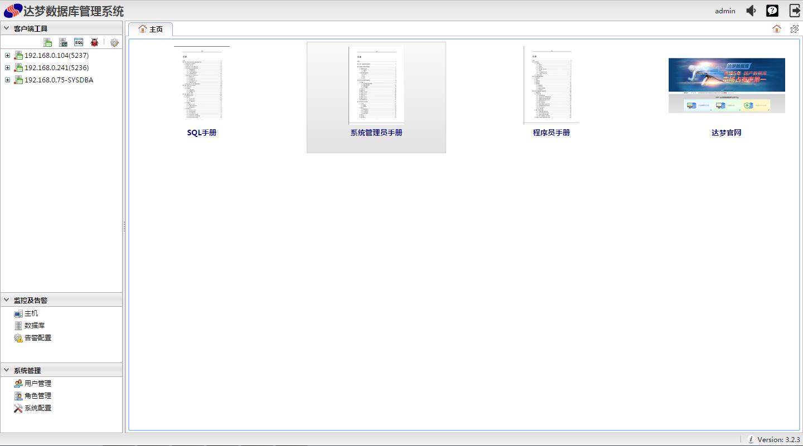
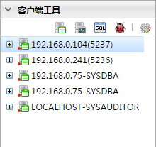
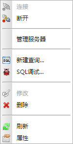
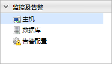
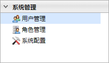
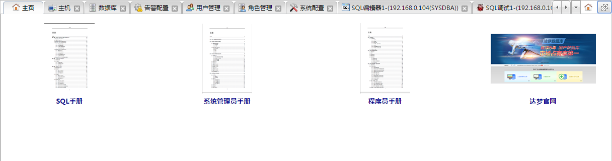
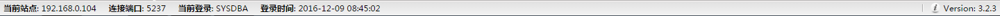
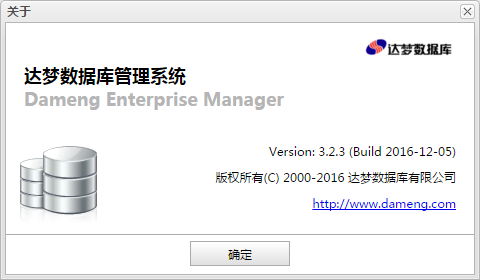

新建查询...
新建查询...DEM全称为Dameng Enterprise Manager。DEM提供了数据库对象管理和数据库监控的功能，并且通过远程主机部署代理，能够实现对远程主机状态和远程主机上达梦数据库实例状态的监控。 DEM的监控不只局限于单个数据库实例，它能够对数据库集群(MPP、DSC、数据守护)进行监控和管理。DEM主页如下图所示:

DEM主页主要由以下几个部分组成。如下图所示:
DEM主页顶部包括两部分，左侧为达梦数据库有限公司LOGO，右侧为用户修改按钮，告警通知按钮和退出按钮，如下图所示:
功能按钮列表
| 按钮 | 说明 |
|---|---|
| 用户修改按钮 | 点击DEM主页顶部左侧登录用户名，将弹出用户修改对话框 |
| 在主面板中弹出告警通知面板 | |
| 在浏览器中弹出DEM帮助页面。 | |
| 退出登录 |
客户端工具导航包括顶部的功能按钮，数据库对象管理和监控的导航列表。

功能按钮列表| 按钮 | 说明 |
|---|---|
| 对象管理 | 打开新建连接对话框，连接成功后将在导航列表中创建此数据库连接的数据库对象管理导航。 |
| 状态监控 | 打开新建连接对话框，连接成功后将在导航列表中创建此数据库连接的数据库监控导航。 |
| 新建查询... |
如果选中已连接的数据库连接导航，点击按钮则在主面板创建新的SQL执行面板。否则 打开新建连接对话框，连接成功后将在主面板创建新的SQL执行面板。 |
| SQL调试... | 如果选中已连接的数据库连接导航，点击按钮则在主面板创建新的SQL调试面板。否则 打开新建连接对话框，连接成功后将在主面板创建新的SQL调试面板。 |
| 首选项 | 打开首选项对话框，用来设置SQL查询分析器的属性。 |
客户端工具导航右键菜单如下图所示:

导航树右键菜单| 按钮 | 说明 |
|---|---|
 连接 连接 |
重连当前失效数据库连接。 |
| 断开 | 断开当前数据库连接。 |
| 管理服务器 | 打开管理服务器对话框，进行当前数据库的管理。 |
| 新建查询 |
在主面板创建新的SQL执行面板。 |
| SQL调试 | 在主面板创建新的SQL调试面板。 |
 修改 修改 |
打开数据库连接对话框，修改数据库连接的属性。 |
 删除 删除 |
删除选中的数据库连接。 |
 刷新 刷新 |
刷新数据库连接。 |
| 属性 | 打开数据库连接对话框，查看数据库连接的属性。 |
监控及警告导航包括主机、数据库和告警配置。

导航说明| 按钮 | 说明 |
|---|---|
| 主机 | 打开主机监控面板。 |
| 数据库 | 打开数据库监控面板。 |
| 告警配置 | 打开告警配置面板。 |
系统管理导航包括用户管理、角色管理和系统配置。

导航说明| 按钮 | 说明 |
|---|---|
| 用户管理 | 打开用户管理面板。 |
| 角色管理 | 打开角色管理面板。 |
| 系统配置 | 打开系统配置面板。 |
主面板用来承载主页面板、SQL执行面板、主机面板等各种功能面板。默认打开主页面板，主页面板中包括SQL手册、系统管理员手册 、程序员手册。如下图所示:

功能按钮说明| 按钮 | 说明 |
|---|---|
| 显示主页 | 在主面板中显示主页面板。 |
| 关闭所有选项卡 | 关闭主面板中除主页面板的其他面板。 |
DEM主底部部包括两部分，左侧选中数据库连接的连接信息，右侧为DEM版本号，点击版本号将弹出DEM关于对话框，如下图所示:

